🥽 Halloumi-Quest · native APK · in development
BITYMI demos
WebGPU 2D-surfel splatting with texture atlases baked from a neural representation. All scenes use --feature SV (K=7 Spherical-Voronoi sites/surfel) and a typeD (BC7-codebook) residual atlas.
Viewer = our fork of WebSplatter with the 2DGS rasterizer ported on top: wait-free hierarchical Blelloch sort instead of the spin-wait Fuchsia radix that crashes on Snapdragon-class phones.
Atlas format: BC7 ships everywhere desktop / iOS Safari / iPad Pro support texture-compression-bc. ASTC is the Adreno / Mali Android equivalent — pick this on a Snapdragon Android phone if BC7 falls back to color-only (no residual). typeD = K=65536 K-means centroids re-encoded as one BC7 (or ASTC) 4×4 codeword each; loader gathers into a normal texture_2d_array at load so the fragment shader does one HW sample per pixel (bit-identical render cost to raw BC7/ASTC, ~7× smaller download).
Immersive VR (Meta Quest 2)

🥽 Brain 2k in VR
🥽 Brain 2k · XR c-series · CONIC + flicker fix
🧫 Brain (tiny, no atlas)
🧬 Brain (tiny) · WebGL2 + VR · SV + bitymi
🧬 Brain 2k · WebGL2 + VR · .bitymi/BPLY
🔬 Paper checkpoint · 3D_SH_res
The Garden 3D_SH_res bake used for the paper, packaged with typeD (BC7-codebook) atlas + BPLY.
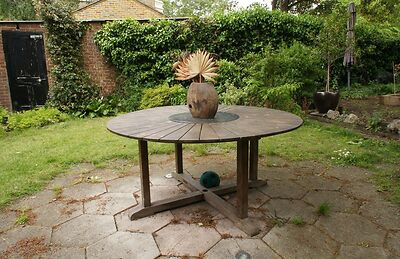
🔬 Garden · 3D_SH_res
⚡ Garden · renderer A/B · old ↔ new
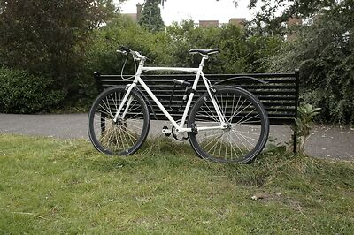
🎯 Bicycle · proberes+mips · contracted
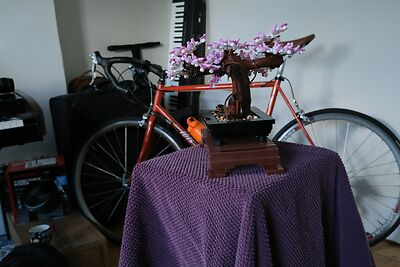
🎯 Bonsai · proberes+mips · contracted
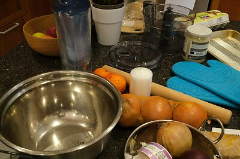
🎯 Counter · proberes+mips · contracted
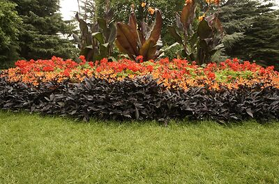
🎯 Flowers · proberes+mips · contracted
🎯 Garden · proberes+mips · contracted
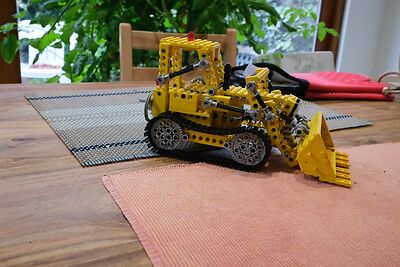
🎯 Kitchen · proberes+mips · contracted
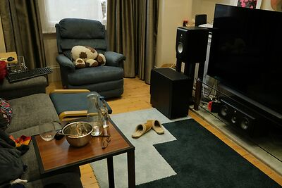
🎯 Room · proberes+mips · contracted
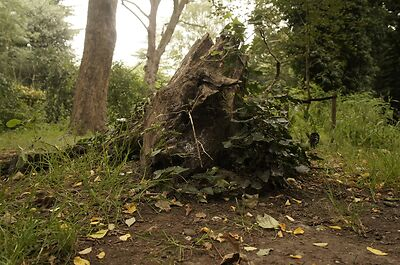
🎯 Stump · proberes+mips · contracted
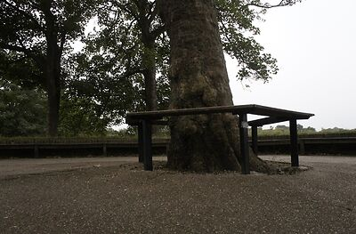
🎯 Treehill · proberes+mips · contracted
🎯 Room · proberes · probe atlas
📦 Room · packed · shelf-packed bake
🎯 Bicycle · proberes · probe atlas
▸medical11 scenes
Cinematic Anatomy (micro-CT)
Brain (micro-CT 47µm)
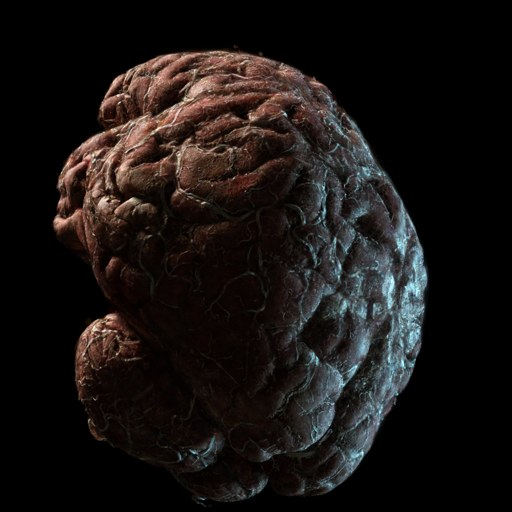
Brain (micro-CT, blursplit)
Brain 2k
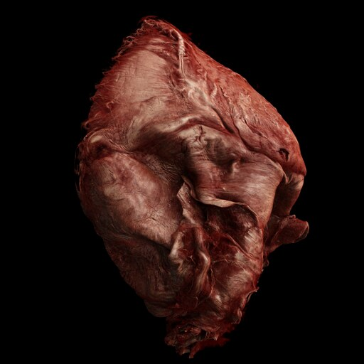
Heart clip 1
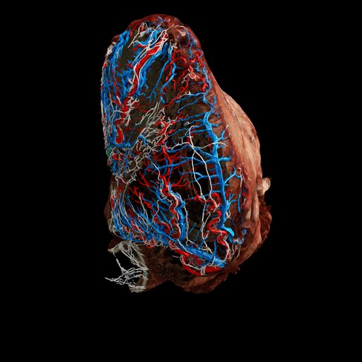
Heart clip 2
Heart clip3
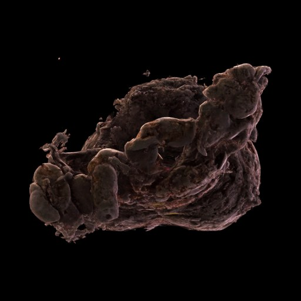
Prostate (HiP-CT)
🔀 Heart clip 1 ↔ clip 2 · split-slider
Photon-Counting CT (Siemens)
▸personal4 scenes
Drag to orbit · pinch to zoom · two-finger / three-finger drag to pan. Needs WebGPU (Chrome 121+ on Android, Safari 18.2+ on iOS). Tap the 📊 Benchmark panel inside the viewer for SMERF-style FPS sweeps.